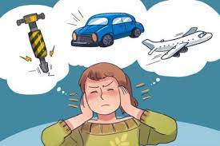
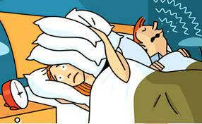

Tác động của ô nhiễm tiếng ổn
- Đối với con người
Sự tiếp xúc thường xuyên với tiếng ồn có độ lớn trên 80 decibel có thể làm giảm thính lực. Cơ chế gây giảm thính lực do tiếp xúc với tiếng ồn là cơ chế thần kinh và cơ học. Tiếng ồn gây nên những thương tổn ở bộ phận thần kinh của cơ quan thính giác, những nghiên cứu đã quan sát thấy ở những người tiếp xúc với tiếng ồn thường xuyên, ất khả năng nhạy cảm thôngthường, dần dần không cảm ứng được với âm tần có cường độ thấp.
+ Tăng nguy cơ mắc các bệnh tim mạch: Việc tiếp xúc với ô nhiễm tiếng ồn trong nhiều năm liền có thể làm tăng khả năng mắcbệnh tim mạch sau này lên 300%. Khoảng một thập kỷ trở lại đây, các nhà khoa học từ Đại Học Gothenburg đã phát hiện ra rằng mức độ tiếng ồn cao làm tăng nhịp tim của một cá nhân và gây co thắt mạch máu việc này khiến chúng ta dễ bị đau tim hoặchuyết áp cao. Tiếp xúc với ô nhiễm tiếng ồn hơn 8 tiếng mỗi ngày thậm chí có thể còntệ hơn Tiếng ồn tác động đến cơ thể qua hệ thần kinh thực vật (thần kinh giao cảm) và hệ nội tiết (tuyến yên và tuyến thượng thận). Những tác động này kéo dài gây nên các nguy cơ như huyết áp tăng, mỡ máu tăng, độ nhớt của máu tăng, tăng nhịp tim, tăng lượngđường trong máu, ảnh hưởng các yếu tố đông máu. Từ đó gây nên bệnh cao huyết áp,bệnh tim thiếu máu cục bộ và nghiêm trọng hơn là đột quị
+ Rối loạn tâm lý: Những tiếng ồn mà bạn đã trở nên “quen thuộc” có thể dẫn đến những rối loạn tâm lý nghiêm trọng và đáng buồn, hầu như chúng ta không thể nhận ra điều đó và nó trởthành một phần của cuộc sống. Những tiếng ồn mà bạn “đã quen” đó sẽ khiến bạn dễ nổi cáu, lo lắng, mất lí trí khi đưa ra quyết định hoặc tâm lý không thoải mái cả ngàyTrong các trường hợp tồi tệ nhất, tiếng ồn có thể khiến cuộc sống của bạn trở nên căng thẳng đến mức khiến bạn trở nên xa cách với xã hội, không hiệu quả trong việc do kém tập trung và mất ổn định cảm xúc giảm sự tự tin khi giao tiếp.
+ Giảm chất lượng giấc ngủ: Nếu từng sống trong một khu vực ồn ào, bạn sẽ biết thế nào là một giấc ngủ với chất lượng kém, tiếng ồn khiến giấc ngủ của bạn trở nên chập chờn và dễ bị giật mình. Sự nguy hiểm của việc ngủ không ngon vào ban đêm khiến ngày của bạn trở nên nhàm chán, bạn trở nên mệt mỏi và buộc phải từ bỏ hầu hết các hoạt động tiêu hao năng lượng. Giấc ngủ kém trong thời gian dài củng có thể dẫn đến các bệnh về tim mạch. Tiếng ồn còn làm cho mất ngủ, suy sụp tinh thần và thường bị căng thẳng thần kinh.Mất ngủ ảnh hưởng đến tâm lý dễ cáu gắt, bực bội, trí nhớ giảm, giảm khả năng tậptrung chú ý, mệt mỏi, năng suất chất lượng công việc, học tập giảm sút, mất thăng bằng, dễ té ngã, lái xe không an toàn. Việc mất ngủ kéo dài cũng là nguyên nhân gâyrối loạn nhịp tim, tăng huyết áp, nguy cơ nhồi máu cơ tim cao; nguy cơ béo phì, đái tháo đường...
- Đối với động vật
+ Tiếng ồn quá lớn khiến cho việc tìm kiếm thức ăn của động vật bị cản trở. Sự cân bằng sinh học của động vật cũng bị ảnh hưởng rất lớn bởi ô nhiễm tiếng ồn Ô nhiễm tiếng ồn đại dương cũng ảnh hưởng không nhỏ đến các loài như cá heo, cá voi,… bởi chúng sử dụng sóng âm để tìm kiếm thức ăn và đồng loại. Khi môi trường bị tác động bởi âm thanh của tàu biển và sóng âm… làm chúng mất phương hướng, mất bạn tình và nhiều hành vi khác. Theo báo cáo của Quỹ quốc tế về bảo vệ động vật, trong 40 năm trở lại đây, khoảng cách mà cá voi xanh giao tiếp được với nhau đã bị giảm tới 90% do sự ô nhiễm tiếng ồn.